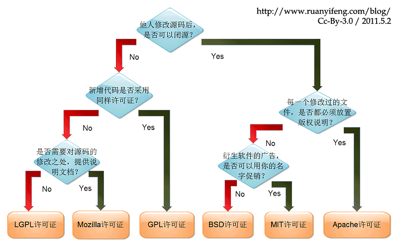

NPM 的基础知识
npm 的安装
作为 NodeJS 的包管理工具， 安装 NodeJS 的过程中， npm 就会自动安装，而安装 NodeJS 的方法一般有三种：
官网安装包
官方已经为各个系统构架好安装包，访问 https://nodejs.org/en/download/ 根据系统下载安装即可。
编译安装
如果想要体验
NodeJS最新特性，可以从源码编译安装，较为复杂，需 clone 源码并安装整套的编译工具，具 体可访问 https://github.com/nodejs/node/blob/master/BUILDING.md，这里不展开。NodeJS版本管理工具上面两种安装方式都有一个无法避免的问题：无法切换版本。
NodeJS从和io.js决裂又合并后的第一个大 版本，v2 之后，就采用 Long Term Support（LTS）的方式发布NodeJS，这意味着NodeJS的版本会快速迭代。从15年的 v2，到现如今20年的 v15，注定会出现某些特性不兼容的现象，那注定会遇到切换NodeJS运行时版本的问题（LTS 是长期支持版本，版本号为偶数，每年4月发布，奇数号版本为不稳定版本，建议使用 LTS 版本）。nvm和n就是为了解决这个问题，两者在功能和使用上没有明显差异，但是实测nvm会导致zsh打开缓慢，可见官方 issue ，所以推荐使用n来管理NodeJS版本访问
n的 官方仓库，可以看到安装脚本：curl -L https://raw.githubusercontent.com/tj/n/master/bin/n -o n安装后会自动安装最新的 LTS 版本，
npm也会安装最新版本（n的具体使用此处不展开）。
npm 的组成
先看下 npm 的组成：
- npm cli: 用于开发者本地开发、安装、更新、发布模块
- npm web: 用于展示、搜索模块，官方网站：https://www.npmjs.com/
- npm registry（源）: 用于存储、管理模块，以及模块相关的用户信息、组织信息等，官方 registry：https://registry.npmjs.org
npm 的源
官方的 registry 属于公开源，虽然有私有模块的能力，但是实际数据也是存储在 npm 的服务器上，对于企业来说，风险较大，所以企业用户一般采用自建源的方式维护私有模块。
常见的源如下：
- 官方：https://registry.npmjs.org
- 阿里国内源（只镜像官方数据）：https://registry.npm.taobao.org/
- 阿里集团私有源（镜像官方数据 + 私有模块）：https://registry.npm.alibaba-inc.com
源的使用：
临时使用
npm install [模块名] --registry=https://registry.npm.alibaba-inc.com长期使用
npm的配置文件路径为~/.npmrc，如果需要长期使用其他源，可以直接更改配置文件vim ~/.npmrc// ~/.npmrc registry=https://registry.npm.alibaba-inc.com分 scope 使用
实际使用中，经常会碰到在未连接内网的情况下安装公开模块，此时就需要切换源才可安装，因为，源可以按照 scope 分别配置。
阿里集团内的 scope 有三种，
@ali@alipay@alife，所以，配置如下：// ~/.npmrc @ali:registry=https://registry.npm.alibaba-inc.com @alipay:registry=https://registry.npm.alibaba-inc.com @alife:registry=https://registry.npm.alibaba-inc.com registry=https://registry.npm.taobao.org/如果不想手动修改源，可以使用开源工具 nrm。
接下来我们看下几种 npm 的区别。
npm cli 的差异
npm 和 yarn 的区别
yarn 诞生在 npm v4 的时代，主要解决两个问题：
依赖平铺
早期，使用 windows 的同学如果删除
node_modules目录时，经常会遇到目录名太长，无法删除的问题，原因是npm在安装依赖时，会以树的方式新建目录，如下：app@1.0.0 ├─┬ module-a │ ├─┬ module-b │ │ ├─┬ module-c │ │ │ ├── module-d │ │ │ ├─┬ module-e ├─┬ │ │ └── module-f ├─┬ module-1 │ ├─┬ module-2 │ │ └── module-3 └─└── module-4如果依赖较深，
node_modules的目录层级会非常非常深，并且同版本的模块会被重复安装，所以，关于npm的这个问题，网络上就有了一张非常有名的图：版本锁定
另一个就是版本锁定的问题，举个例子：某个前端项目依赖
babel@6.9.0，package.json里的 babel 版本号配置为，^6.9.0，npm安装时会安装6.9.x的最新版本。如果 babel 发布了新版本 6.9.1，引入了一个 bug，项目构建失败，此时版本带来的问题就会被暴露。更极端的情况，一个运行时依赖的包，预发测试没问题，重新构建上线的过程中，包更新了，将会导致线上业务直接出问题。虽然在
package.json中可以锁定版本，但是只能锁当前项目所依赖的模块的版本，二级依赖或者更深则无法锁定，所以yarn引入了yanr.lock文件，用来记录整个依赖树的版本号，重新安装时，会以 lock 文件为准安装依赖。安装速度
yarn采用了缓存 + 并行安装的方式加快依赖安装速度，极大减少安装耗时，用空间换时间的典型例子。不过，在
npm的不管更新中，上述问题都已经解决，并且解决的更加优秀，也新增了更优秀的新特性，所以，现如今更推荐使用npm管理依赖。
npm 和 cnpm 的区别
一句话总结， npm + 阿里国内源 = cnpm ，使用上和 npm 无区别。
npm 和 tnpm 的区别
tnpm 的定位更像 yarn ，从底层逻辑上针对依赖安装做了优化，采取了软链 + 缓存 + 平铺的方式加快安装、减少层级，不过这也带来了不少问题，比如最常见的，小程序的项目无法识别软链，或者软链导致 npm bin 找到的路径不正确等问题。
所以 tnpm 也引入了 mode 参数，允许使用 npm 或者 yarn 的模式，此时 tnpm 和更改源后的 npm yarn 无太大差异。
tnpm 在包的发布上也做了很多改造，如只允许合法 scope 内的包发布、与内网信息打通、云端构建平台联动等。
总结：
安装用
npm+ 内网源发布用
tnpm
package.json 中的字段
package.json 是 npm 的配置文件，字段极多，复杂度较高，这里以常见的字段举例说明用法及相关知识。
name、description、keywords
这三个字段用来描述模块的相关信息， name description 为 string， keywords 为 string 数组。
version
用于标记模块的版本号，遵循 semver 语义化版本规范，详解如下：
版本号格式
版本号格式：x.y.z，每一位只能递增
- x：主版本号（major），当模块引入不兼容的 API 时，需要升级此版本号
- y：次版本号（minor），当模块引入向下兼容的 API 时，需要升级此版本号
- z：修订版本号（patch），当模块引入线下兼容的修复时，需要升级此版本号
先行版本
当要发行测试版本，或者还未百分百验证的大版本时，需要先发布先行版本，先行版本号格式：x.y.z-[版本类型].[版本标记]，常见的先行版本如下：
- beta：内部测试版本
- alpha：公开测试版本
- rc：正式版本的候选版本（离正式发布仅一步之遥）
如，1.0.1-beta.0，16.7.9-alpha.a14cef56，17.0.0-rc.0 等。
main
用于标记本模块的入口文件，默认值为 ./index.js ，如：
import moduleA from 'moduleA';
NodeJS 将解析 node_modules/moduleA 文件下 package.json 里的 main 字段，如配置为 src/index.js ，则实际效果为：
import moduleA from 'moduleA/src/index';
bin
用于标记本模块作为命令行工具时的命令名称和入口，如：
{
"name": "cmd-test",
"bin": {
"cmd-test-init": "./src/init.js",
"cmd-test-build": "./src/build.js",
}
}
如果全局安装 cmd-test 模块后，将会在系统路径中添加 cmd-test-init 和 cmd-test-build 这两个命令，执行后将分别运行对应的 js 文件。
scripts
用于标记本项目中可用的脚本命令，由多个 bash 脚本组成，如：
{
"name": "scripts-test",
"scripts": {
"dev": "webpack dev",
"build": "webpack build"
}
}
使用时，可以用 npm run dev npm run build 来执行相关命令。
scripts 中配置的 bash 脚本，会优先从 ./node_modules/.bin 目录中找本地的 bin，再一级一级向上找，与 npm 的包解析逻辑一致（有空展开讲）。
讲到 scripts 有一个经常用到的工具， npx ，这是 NodeJS 自带的模块，主要有两个作用：
直接调用本地模块
如上面例子中的 webpack，如果不通过
npm run，则必须用./node_modules/.bin/webpack来调用。npx则可以简化这个过程，可以直接npx webpack，npx会自动寻找 bin 所在路径，再进行调用。不安装的情况下调用全局模块
比如
create-react-app，这个包用于初始化 react 项目，正常使用时，需全局安装，再进行调用，使用npx则可以npx create-reac-app init，npx会自动安装所需依赖，执行相关命令，执行完毕后删除依赖。其他高级用法，可以查看官方仓库：https://github.com/npm/npx
dependencies、devDependencies、peerDependencies
用于标记本项目的依赖：
- dependencies：运行时依赖
- devDependencies：开发、构建时依赖
- peerDependencies：前置依赖（即当前模块必须在安装了某模块后才可运行）
安装模块时，带上 --save 将会把模块写入 dependencies 字段，带上 --save-dev 将会把模块写入 devDependencies 字段。
依赖的模块版本号规范如下：
- 兼容 patch 版本号：~1.2.0、1.2.x、1.2（将会安装 patch 版本中最新的）
- 兼容 minor + patch 版本号：^1.2.0、1.x、1（将会安装 minor 版本中最新的）
- 兼容 major + minor + patch 版本号：*、x（将会安装 major 版本中最新的）
- 指定 dish-tag：beta、alpha（将会安装指定 dist-tag 的最新版本）
author
用于标记模块作者，格式为： name<mail@example.com>
repository
用于标记模块仓库地址，格式为：
{
"name": "repository-test",
"repository": "https://gitlab.alipay-inc.com/group/repo.git"
}
{
"name": "repository-test",
"repository": {
"type": "git",
"url": "git@gitlab.alipay-inc.com:group/repo.git"
}
}
{
"name": "repository-test",
"repository": {
"type" : "svn",
"url" : "https://svn.alibaba-inc.com/svn/trunk/"
}
}
license
用于标记当前模块的代码许可证，不同的许可有不同的限制， React 此前就因为许可问题闹的沸沸扬扬，详解借用阮老师的一张图：
其他
除了 npm 的官方字段之后，package.json 里也可以放其他工具的配置字段，比如 eslint lint-stage 等，具体使用可参考各工具的官方文档
模块的发布
这里以
npm为例，tnpm的使用类似
注册账号
发布前需在相应的源注册账号，并确定账号的 scope（为了减少包重复的问题，目前
npm已强制使用 scope 的形式管理模块，如 @luoyefe 等）。登录
本地开发完成，发布模块前，需在本地进行登录，执行
npm login输入账号密码邮箱即可。发布
发布的命令为
npm publish，执行后会找到package.json中的version字段进行发布。上文提到 version 存在先行版本，比如 beta、alpha 等，npm 发布时也有相关概念，即 dist-tag，发布时可以指定 dist-tag 来发布不同的先行版本，如
npm publish --tag beta，将发布 beta 版本。